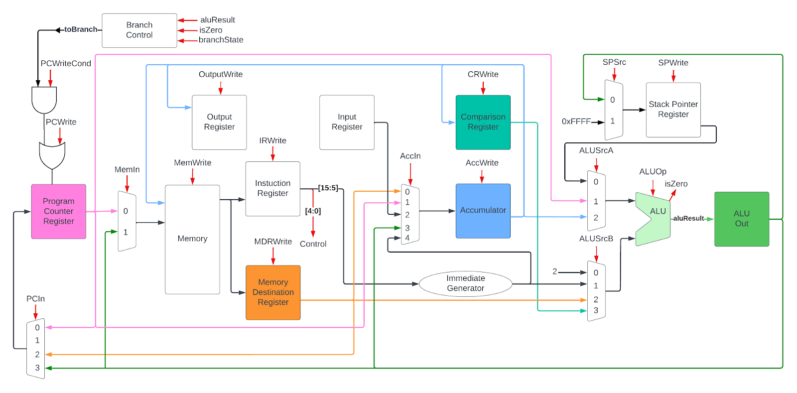

Portfolio
Accumulator-Architecture Processor
For this project, I collaborated with a team of 4 other people to design and implement a cpu with a reduced instruction set from the ground up. We ended up with a working accumulator architecture processor, meaning it only uses one register. For this project, I specifically worked mostly on the design of the processor, the creation of the control unit, and implementing an assembler for our unique instruction set. Please click on the link for more details about the project.